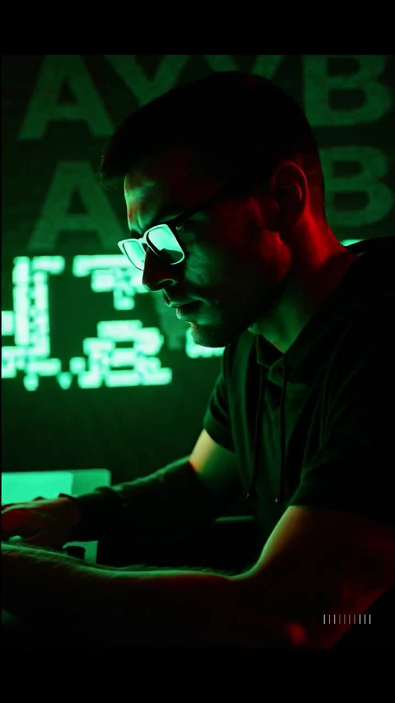

01 · Start here
Orientation
Student IDs, hall passes and your first excuse to return to the dance floor.
Begin orientation →GDB-000 · Orientation
AYYBO in your headphones. Your people on the floor. GDB University is the inside joke you can wear: bass, fits, late nights and one more track.
Admissions
Grab a hall pass. Follow a bassline into Low End Studies, find a fit in the Store, or lose track of time with the founding AYYBO collection.
Student IDs, hall passes and your first excuse to return to the dance floor.
Begin orientation →
Low End Studies, Dancefloor Physics, Club Science. Choose the rabbit hole your body already picked.
Browse academics →

The Quad, Library of Vibes, Rizz Lab, Night Lab and Sidechain Society.
Walk the campus →
Orientation films, an AYYBO Matrix fan edit and a portal into the next late night.
Enter Media Lab →
Campus fits, tees, totes and collectible lore. A design archive to browse.
Browse artifacts →
The founding AYYBO collection, Certified GDB and the entirely unserious GDB Meter.
Open Records →
A living library of what actually existed before the campus website.
Enter archives →Academic divisions
Some came for the bass. Some stayed for the bounce. Find your room.
Orientation archive
A hall pass, a tee, a badge. Small things that say you found your people.